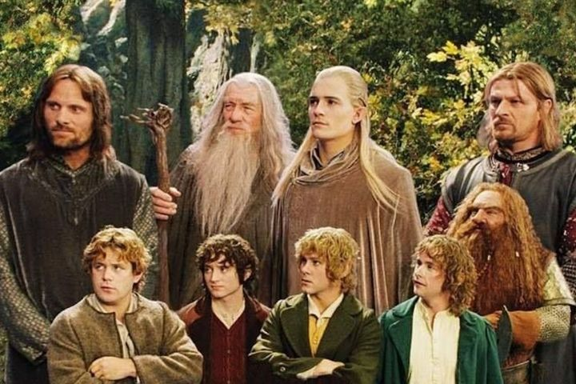
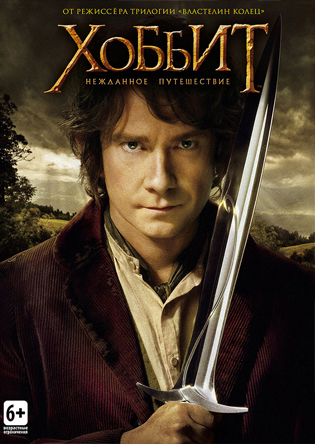

Оригинальная книга
Оригинальная книга "Властелин колец" была написана в 1948 году и переведена на русский язык в 1975.
Дата первой публикации - 29 июля 1954 года.

История создания книги "Хоббит"
Когда рассказывают о том, как начинался «Хоббит», неизменно цитируют самого Профессора. Дескать, однажды, утомлённый проверкой скучных экзаменационных работ, он на обороте одной из них записал фразу: «В норе под землёй жил хоббит», — и всё заверте… Однако на деле корни истории о Бильбо Бэггинсе выявить не так уж просто.

(в книге "Хоббит" Леголас пытался шуримуриться с эльфийкой, но она изменила ему с гномом)
наверх